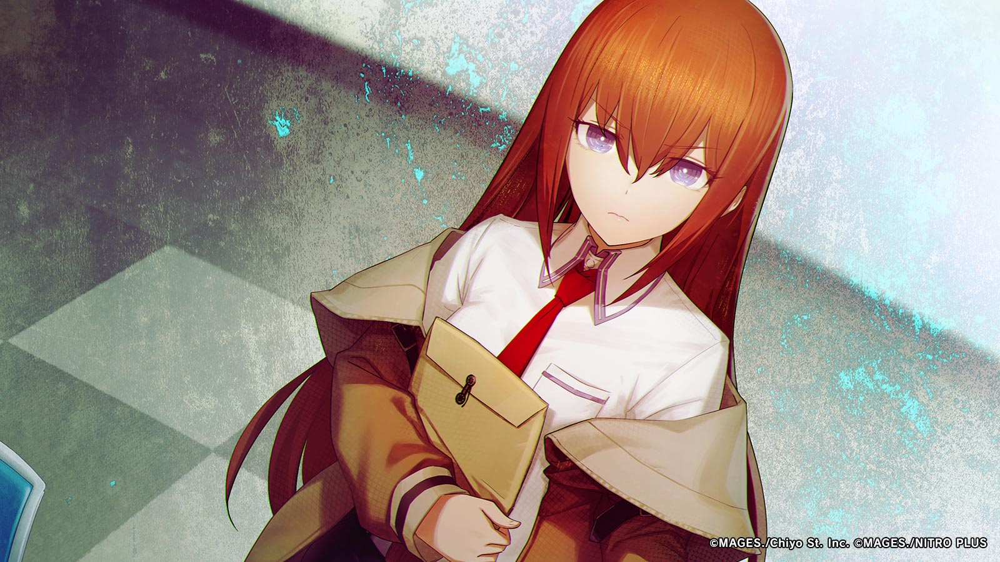

A fictional lens
The lab door.
Steins;Gate is a big influence. Mostly the part where something impossible turns into a practical problem.
Just a note on the influence. The actual project is on the companions page.
Companions pageWhat stayed
Sci-fi feels closer when it talks back.
That feeling is in the voice experiments, the astronomy stuff and the games. It's an influence, and I'm labelling it as one.
